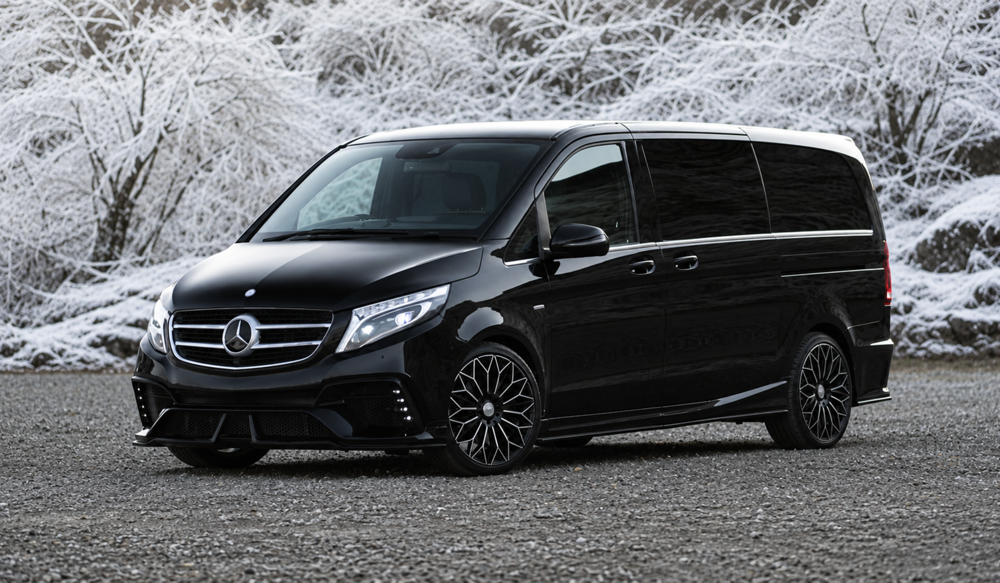
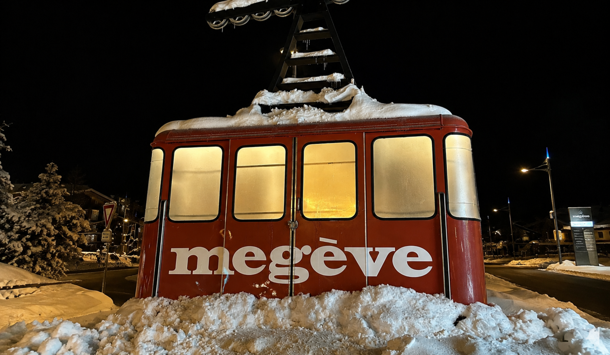

Il est 7h40. Le FBO de Genève-Cointrin baigne dans une lumière d'hiver froide et nette. Un Falcon 8X vient de se poser depuis Dubaï avec à bord sept invités — la famille du marié — qui n'ont jamais mis les pieds dans les Alpes françaises. Dehors, il neige légèrement. La route vers Megève prend en ce moment 1h45 au lieu de 1h20. Et le dîner de bienvenue commence à 19h30.
Ce scénario, ce n'est pas une exception. C'est la réalité d'un mariage d'hiver de luxe dans les Alpes. 180 invités, 14 nationalités, 4 jours, des conditions météo imprévisibles, des accès de montagne complexes — et l'exigence absolue que chaque déplacement se déroule comme si rien de tout cela n'existait.
Ce guide a été conçu pour les wedding planners internationaux et les agences événementielles de luxe qui organisent — ou souhaitent organiser — des mariages de destination hivernaux dans les Alpes françaises : Megève, Courchevel, Val d'Isère, Chamonix, Méribel ou les Trois Vallées. Il couvre l'ensemble de la logistique transport avec le niveau de détail qu'un professionnel de haut niveau doit maîtriser pour choisir ses partenaires, dimensionner ses budgets et tenir ses promesses à ses clients.
Le transport d'un mariage d'hiver dans les Alpes est fondamentalement différent d'un événement estival : conditions hivernales imprévisibles, routes enneigées, horaires de vol sensibles aux aléas météo, accès en altitude — chaque paramètre exige une expertise terrain spécifique. Ce guide traite ces spécificités dans leur intégralité, avec des exemples concrets issus de coordinations réelles sur l'ensemble des stations alpines françaises. Retrouvez également notre page dédiée Megève — Luxury Ground Logistics pour les spécificités de cette destination.
Pourquoi les Alpes françaises séduisent les couples internationaux pour un mariage d'hiver
En dix ans, les Alpes françaises sont devenues l'une des destinations phares du mariage de destination de luxe hivernal en Europe. Plusieurs raisons expliquent cette attractivité — et chacune d'entre elles a un impact direct sur la logistique transport.
Un décor incomparable
La neige, les sommets, les chalets en bois brûlé, les feux de cheminée dans un lodge cinq étoiles — les Alpes offrent une esthétique que nul autre territoire ne peut reproduire. Des couples viennent de New York, de Sydney, de Riyad ou de Singapour pour se marier dans ce cadre. Ce sont des invités qui découvrent pour la première fois la montagne alpine. Ils ne connaissent pas le terrain, ne parlent pas forcément français, et s'attendent à une prise en charge totale.
Une concentration de propriétés d'exception
Megève, Courchevel 1850, Val d'Isère — ces stations concentrent des palaces, des chalets de luxe et des domaines privés inaccessibles depuis une route publique. Les sites de réception sont souvent éloignés les uns des autres, perchés à différentes altitudes, desservis par des pistes privées. Sans coordination transport millimétrée, la belle promesse du décor se transforme en chaos logistique.
Une saison de pointe très disputée
La haute saison hivernale (mi-décembre à mi-mars) est aussi la période de ski. Les routes sont saturées le week-end, les prestataires locaux surchargés, et les taxis traditionnels absents ou hors de prix. Les mois de janvier et février offrent un peu plus de respiration, mais les conditions météo sont plus sévères. La fenêtre idéale d'un mariage d'hiver de prestige se joue sur quelques weekends très convoités chaque année.
La clientèle internationale comme norme, pas comme exception
Un mariage d'hiver alpin de luxe réunit rarement des invités uniquement français. Les 14 nationalités mentionnées dans ce guide sont représentatives : familles franco-britanniques, couples franco-libanais, invités venus des Émirats, de Russie, des États-Unis ou d'Asie du Sud-Est. Cette diversité linguistique et culturelle impose des standards de communication que les prestataires locaux traditionnels n'ont tout simplement pas.
Dans les Alpes en hiver, la logistique n'est pas un support à l'événement. Elle est l'événement. Un transfert raté efface dix heures de préparation irréprochable.
Les défis logistiques spécifiques d'un mariage d'hiver de luxe
Un mariage d'hiver dans les Alpes cumule les complexités d'un mariage de destination international avec les contraintes propres à la montagne hivernale. Voici les défis concrets qu'un wedding planner doit anticiper.
La météo : le paramètre non négociable
La neige, le verglas et le brouillard ne préviennent pas. Une tempête peut fermer la route principale vers la station en quelques heures. Un épisode de gel nocturne peut rendre impraticables les routes qui étaient parfaitement carrossables à 18h. Un prestataire transport sans plan de contingence météo n'est pas un prestataire — c'est un pari.
Les contraintes concrètes incluent : les bulletins météo à surveiller 72h à l'avance, les alertes préfectorales sur l'état des routes, la coordination avec les services de voirie des communes alpines, et les itinéraires alternatifs identifiés en amont pour chaque transfert critique.
Des flux simultanés complexes
Sur un mariage de 180 invités, il n'est pas rare d'avoir en même temps :
- 3 vols à accueillir à l'aéroport de Genève entre 11h et 13h
- 2 jets privés atterrissant au FBO de Chambéry en début d'après-midi
- Un groupe arrivant en TGV à la gare de Sallanches à 14h22
- 4 familles dans différents hôtels à faire monter pour le cocktail de bienvenue à 18h
Gérer ces flux en parallèle exige une coordination centrale — un coordinateur qui a la vision d'ensemble, parle à tous les chauffeurs en temps réel, et prend des décisions dynamiques quand un vol est retardé ou qu'une route est bloquée.
Des hébergements dispersés en altitude
Les invités sont rarement concentrés dans un seul hôtel. Dans un mariage alpin haut de gamme typique, on retrouve : le palace principal de la station (4-5 suites VIP), des chalets de luxe loués en privatif par des familles, quelques suites dans un lodge boutique à l'écart du village. Chaque site est à une distance et une altitude différente. Les durées de trajet varient de 8 minutes à 35 minutes selon les conditions. Sans cartographie précise, la gestion des rotations devient impossible.
Des invités qui n'ont jamais skié — ni voyagé en montagne
Des invités du Moyen-Orient ou d'Asie du Sud-Est peuvent ne jamais avoir vu la neige. L'altitude peut provoquer des malaises. La nuit tombe tôt (17h30 en janvier). Les routes de montagne à flanc de falaise impressionnent les non-habitués. Un service de transport de luxe en montagne inclut aussi une dimension rassurante et pédagogique : des chauffeurs calmes, anglophone, habitués à accompagner ce type de clientèle.
Le timing du Jour J : la cérémonie ne peut pas attendre
Contrairement à un mariage urbain où un taxi manqué peut être remplacé en dix minutes, en montagne hivernale, un transfert loupé peut décaler toute la cérémonie. Il n'y a pas de taxi de remplacement au coin de la rue. Il n'y a pas de metro. Le seul filet de sécurité, c'est la préparation.
Aéroports, FBO et points d'entrée vers les Alpes françaises
La logistique d'un mariage alpin commence avant même que les invités ne touchent le sol. La gestion des points d'entrée est l'une des dimensions les plus techniques — et les plus révélatrices du niveau de service d'un prestataire.
L'aéroport de Genève-Cointrin — le hub principal
Genève est le point d'entrée le plus fréquenté pour les Alpes françaises. Depuis l'aéroport international, le trajet vers Megève est de 1h15 à 1h30 en conditions normales. En période hivernale avec neige, comptez 1h45 à 2h. Les vols intercontinentaux (Dubaï, New York, Doha, Singapour) atterrissent ici en grande majorité. Le FBO de Genève (Privé Genève, TAG Aviation) accueille les jets privés avec une prise en charge côté piste directement dans les salons.
L'aéroport de Lyon-Saint-Exupéry
Pour Courchevel, Méribel ou les Trois Vallées, Lyon est souvent préféré. Le trajet dure 2h à 2h30 selon la destination alpine et les conditions. Les vols depuis Paris (Air France), Barcelone, Madrid ou les capitales européennes y transitent fréquemment. Le FBO Signature Flight Support gère les arrivées en aviation privée.
L'aéroport de Chambéry-Savoie Mont Blanc
Chambéry est le seul aéroport directement en zone alpine. En saison hivernale, des vols charters saisonniers arrivent de Londres, Amsterdam, Bruxelles, Dublin. L'accès à Megève, Courchevel ou Val d'Isère est significativement plus court qu'depuis Genève ou Lyon. Le FBO de Chambéry est plus petit mais parfaitement adapté à l'aviation d'affaires légère.
La gare de Sallanches et les connexions ferroviaires
Pour les invités venant de Paris en TGV, la gare de Sallanches est le point d'arrivée à ~20 minutes de Megève. Les trains directs depuis Paris-Gare de Lyon ont une durée de 3h30 à 4h. La gare d'Annecy (1h depuis Megève) dessert des connexions depuis la Côte d'Azur, Lyon et Genève. Chaque flux ferroviaire doit être suivi avec le numéro de train et intégré au plan de rotation des véhicules.
Accueil côté piste FBO · jets privés depuis Genève, Dubaï & Londres · transfert hiver Alpes françaises
La coordination complète d'un mariage d'hiver sur 4 jours
Un mariage d'hiver de prestige dans les Alpes ne se résume pas à un seul jour de célébration. Le schéma classique couvre quatre jours : arrivées le premier jour, programme préparatoire le deuxième, cérémonie le troisième, brunch et départs le quatrième. Voici la cartographie exhaustive de chaque journée — cliquez sur chaque onglet pour voir le détail opérationnel.
Dites-nous le programme de votre client.
On vous dit si le plan tient — en conditions hivernales.
Lieux, hébergements, nombre d'invités, dates et nationalités — partagez les grandes lignes et recevez une analyse de faisabilité transport sur mesure, contraintes alpines hivernales intégrées. Gratuit. Sans engagement.
Soumettre mon programme →La coordination complète d'un wedding weekend alpin d'hiver —
cliquez sur chaque journée pour voir le détail opérationnel
-
07h30 – 08h30
Accueil FBO Genève · jet privé Dubaï — 7 invités VIP famille du marié. Coordinateur sur le tarmac, véhicules positionnés côté piste, bagages gérés directement.
-
10h00 – 16h00
14 transferts aéroport Genève — vols internationaux (Londres, New York, Tel Aviv, Riyad). Suivi temps réel de chaque vol. Panneau nominatif, service bilingue FR/EN.
-
13h45
TGV Paris Gare de Lyon → Sallanches — 22 invités acheminés depuis la gare vers 4 hébergements différents. 3 véhicules, 2 rotations.
-
15h30
2 jets privés · FBO Chambéry — famille de la mariée (11 personnes). Transfert direct vers chalet privatif, durée 55 minutes en conditions normales.
-
18h30
Rotation collective → Welcome cocktail — 180 invités depuis 5 hébergements vers le lieu de bienvenue. Flotte complète mobilisée. Durée totale : 45 minutes de navettes.
-
22h30 – 00h30
Retours continus — rotations étalées selon les départs, véhicules maintenus au chaud sur site. Coordination WhatsApp active.
- 6 Mercedes Classe V (8 places) pour les transferts collectifs
- 4 Mercedes Classe S pour les arrivées VIP et familles
- 2 véhicules 4×4 (BMW X7) pour les accès altitude
- 1 coordinateur terrain · disponible 06h – 01h
-
08h30
Navettes ski optionnelles — pour les invités qui souhaitent skier le matin. Rotation depuis les hébergements vers les remontées, service sur demande.
-
09h00 – 14h00
2 arrivées tardives · aéroport Genève — invités ayant changé leur vol en dernière minute. Gestion intégrée sans intervention du wedding planner.
-
12h30
Navettes déjeuner en montagne — 60 invités vers un restaurant d'altitude. Coordination avec le domaine skiable pour l'accès véhicules.
-
16h30
Retours · repos pré-soirée — rotation depuis le déjeuner vers les hébergements, temps libre avant le dîner de gala.
-
19h00
Rotation collective → Dîner de gala (pré-mariage) — 180 invités vers le lieu de dîner. Timing négocié avec le traiteur : arrivée complète en 40 minutes.
-
23h45 – 02h00
Retours nocturnes — conditions de gel anticipées. Chauffeurs briefés sur l'état des routes. Plan de repli activé si routes glissantes.
- Jour de respiration : la flotte est réduite mais le coordinateur reste actif
- Les arrivées tardives sont intégrées sans aucun surcoût organisationnel
- Les retours nocturnes sont les plus techniques : routes gelées, altitude, fatigue
-
12h00 · Départ garanti
Transferts Mariés · Suite → Lieu de cérémonie — berline dédiée, itinéraire vérifié la veille, marge de 20 minutes. Le timing de la cérémonie est non négociable.
-
13h30 · Départ garanti
Hébergements → Cérémonie — 180 invités depuis 5 sites. Arrivée garantie 14h15. 6 rotations simultanées, flotte complète. Coordinateur en liaison radio avec les chauffeurs.
-
Immédiatement après
Cérémonie → Espace cocktail — repositionnement rapide de la flotte pendant la cérémonie. Premier départ dans les 8 minutes suivant la fin de la cérémonie.
-
19h45
Cocktail → Grande salle de réception — 180 personnes en 4 rotations successives. Durée totale : 38 minutes. Pas d'attente perceptible pour les invités.
-
00h30 – 03h00
Retours continus · conditions hivernales nocturnes — véhicules chauffés et positionnés sur site. Rotations étalées selon les départs. Routes surveillées en temps réel.
- Zéro retard sur la cérémonie (timing tenu à la minute)
- 180 invités acheminés sans attente visible
- Aucune décision logistique transmise au wedding planner pendant l'événement
-
11h00 – 13h00
Rotation collective → Brunch de clôture — départ depuis les hébergements, ponctualité maintenue malgré les nuits courtes. Véhicules repositionnés dès 10h30.
-
13h30 – 19h00
Transferts départs aéroports & gares — organisés selon les vols de chacun. Marge de 30 minutes sur chaque transfert aéroport, 20 minutes pour les gares.
-
17h00
Dernier vol VIP · FBO Genève — famille du marié vers Dubaï. Transfert direct depuis le lieu du brunch, coordinateur présent jusqu'au décollage confirmé.
- Le Jour 4 est souvent sous-traité à des taxis locaux dans les mariages mal préparés — c'est la dernière impression que les invités emportent.
- Avec B.LIFTED, le même niveau de service s'applique du premier au dernier transfert.
- Le coordinateur reste disponible jusqu'au dernier départ confirmé.
180 invités. 14 nationalités. Zéro retard sur la cérémonie.
C'est exactement ce qu'on construit ensemble.
Partagez les grandes lignes de votre prochain mariage dans les Alpes en hiver — et recevez une proposition de coordination transport clé en main, avec plan météo et contingence inclus.
Obtenir ma proposition →Pourquoi choisir un partenaire logistique unique pour l'ensemble du séjour
Certains wedding planners font appel à plusieurs prestataires selon les journées : une société de transferts pour les arrivées, un prestataire local pour le Jour J, et des taxis pour les départs. Cette approche est compréhensible sur le papier. Elle est désastreuse dans la réalité alpine.
La continuité d'information est non négociable
Un seul coordinateur terrain qui connaît chaque invité VIP, chaque contrainte de chaque site, chaque numéro de vol de chaque famille — c'est la différence entre une coordination fluide et une série d'urgences à gérer en parallèle. Changer de prestataire entre le Jour 1 et le Jour 3, c'est recommencer le briefing de zéro.
La chaîne de commandement doit être simple
Pendant un mariage, le wedding planner gère des dizaines d'imprévus en simultané. Son téléphone ne doit pas sonner pour des questions transport. Un numéro unique, un coordinateur unique, un rapport de situation toutes les deux heures — c'est le standard que l'on doit exiger d'un prestataire premium.
La connaissance du terrain s'accumule au fil des jours
Au Jour 3, un bon coordinateur connaît exactement : les délais réels entre chaque hébergement et le lieu de cérémonie (pas les délais théoriques), les invités qui ont tendance à être en retard, les routes qui ont été traitées ou non dans la nuit, l'état du parking du lieu de réception. Cette intelligence terrain est impossible à construire en un seul jour.
Les attentes d'une clientèle ultra haut de gamme en contexte alpin hivernal
Un mariage de 180 invités dans les Alpes en hiver accueille nécessairement une proportion significative d'invités habitués aux services de très haut niveau. Voici ce qu'ils attendent — et ce qu'un prestataire transport de luxe doit être capable de délivrer.
Un accueil immédiat et anticipé
L'invité VIP qui sort d'un vol de 7 heures depuis New York ne doit pas attendre. Pas deux minutes. Pas le temps de retrouver un badge. Le chauffeur est là avant que les bagages soient sur le tapis. Il connaît le nom de l'invité, son hôtel, et il parle anglais couramment. C'est la norme minimum.
Un véhicule à la hauteur du contexte
Une berline de gamme intermédiaire dans un contexte de mariage alpin de luxe est une faute de goût. Les familles des mariés et les invités de rang A voyagent en Mercedes Classe S ou en van Classe V impeccablement entretenu. Intérieur clean, température réglée avant l'arrivée, eau minérale à bord.
Une communication sans friction
Chaque invité reçoit avant son arrivée : les coordonnées WhatsApp du coordinateur terrain, son heure de prise en charge, le point de rendez-vous précis (avec photo de l'endroit si nécessaire), et une confirmation SMS la veille. L'information voyage vers l'invité — pas l'inverse.
La discrétion comme standard
Parmi 180 invités, certains sont des personnalités publiques ou des hommes d'affaires qui tiennent à leur anonymat. Les chauffeurs et coordinateurs sont briefés sur les règles de confidentialité : pas de photo, pas de conversation sur les autres invités, pas de divulgation d'informations à des tiers.
"La qualité d'un service de luxe se mesure à ce que le client n'a pas eu à demander — parce que tout était déjà prévu."
Les 6 erreurs à éviter absolument dans la logistique d'un mariage alpin hivernal
Ces erreurs reviennent régulièrement dans les témoignages de wedding planners après un événement alpin hivernal mal maîtrisé. Chacune est évitable avec une préparation adéquate.
1. Sous-dimensionner la flotte pour les arrivées du Jour 1
Le premier jour est souvent le plus complexe en termes de flux. Les arrivées s'étalent sur 8 à 10 heures depuis des aéroports différents. Un prestataire qui propose la même flotte que pour une journée standard crée immédiatement des goulots d'étranglement. Mieux vaut une flotte légèrement surdimensionnée qu'un invité qui attend 45 minutes dans un hall d'aéroport.
2. Ne pas anticiper les retards de vol en hiver
En hiver, les retards de vol liés aux conditions météo sont significativement plus fréquents qu'en été. Un vol depuis Londres peut être retardé de 2h à cause de la neige à Heathrow. Si le planning transport est rigide, toute la chaîne s'effondre. Un plan transport hivernal inclut systématiquement des marges de 30 à 45 minutes sur chaque transfert aéroport.
3. Ignorer les conditions de route nocturnes
Entre minuit et 4h du matin, la température chute parfois de 5 à 8°C. Les routes qui étaient sèches en début de soirée peuvent être recouvertes de verglas en fin de nuit. Les retours de soirée doivent être traités avec une vigilance accrue : véhicules équipés de pneus neige, chauffeurs briefés sur les zones à risque, communication active avec les services de voirie.
4. Utiliser plusieurs prestataires non coordonnés
Un prestataire pour les arrivées, un autre pour le Jour J, des taxis locaux pour les départs — ce schéma génère invariablement des conflits de communication, des invités sans prise en charge, et des situations ingérables pendant la cérémonie. Un mariage de prestige mérite un prestataire unique avec une vision d'ensemble.
5. Ne pas briefer les chauffeurs sur le profil des invités
Les chauffeurs qui ne savent pas qu'un invité est le grand-père des mariés, ou que telle famille vient d'Arabie Saoudite et ne parle pas français, ou que telle invitée a des difficultés à marcher — ces chauffeurs ne peuvent pas délivrer un service adapté. Un bon briefing chauffeur inclut les informations clés sur chaque passager VIP.
6. Oublier le Jour 4
Le dernier jour est systématiquement le plus négligé. Les invités sont fatigués, les mariés sont absorbés par leurs adieux, et la logistique des départs est souvent laissée à des taxis de fortune. C'est la dernière impression que les invités emportent du weekend. Elle mérite la même rigueur que le Jour de la cérémonie.
Checklist : évaluer un prestataire logistique pour un mariage alpin hivernal
Avant de valider un prestataire transport pour un mariage de luxe dans les Alpes en hiver, posez-vous ces questions :
- ✓ A-t-il une expérience documentée sur des mariages de grande envergure dans les Alpes (80+ invités, plusieurs jours) ?
- ✓ Connaît-il les routes alpines en conditions hivernales réelles — pas seulement en été ?
- ✓ Dispose-t-il d'un coordinateur terrain dédié sur site pendant tout l'événement, pas d'un simple dispatch téléphonique ?
- ✓ Sa flotte est-elle équipée de pneus neige homologués et dispose-t-il de véhicules 4×4 pour les accès altitude ?
- ✓ Peut-il gérer des flux multilingues — anglais courant minimum, idéalement arabe ou autre selon les nationalités présentes ?
- ✓ Assure-t-il le suivi en temps réel des vols et des FBO — y compris les jets privés avec ETA variables ?
- ✓ Remet-il un plan de contingence météo documenté au wedding planner avant l'événement ?
- ✓ Couvre-t-il l'intégralité du séjour — du Jour 1 arrivées au Jour 4 départs — avec le même niveau de service ?
- ✓ Ses véhicules sont-ils premium et entretenus — Mercedes Classe V, Classe S, ou équivalent — avec intérieur impeccable ?
- ✓ Peut-il fournir des références vérifiables sur des événements de même envergure dans les Alpes françaises en hiver ?
- ✓ Envoie-t-il une communication proactive aux invités — SMS de prise en charge, WhatsApp coordinateur, fiche de transfert personnalisée ?
- ✓ Est-il couvert par une assurance responsabilité civile adaptée aux événements privés de prestige en montagne ?
Votre prestataire actuel maîtrise-t-il vraiment les contraintes hivernales alpines ?
Notre équipe passe votre programme en revue — routes de montagne, FBO, coordination terrain, plan météo — et vous dit précisément ce qui tient et ce qui mérite d'être renforcé. Réponse sous 24h.
Demander l'audit →Étude de cas · 180 invités · 14 nationalités · Mariage d'hiver dans les Alpes
En janvier 2026, B.LIFTED France a coordonné la logistique transport d'un mariage de quatre jours dans les Alpes françaises. Voici les données concrètes de cet événement, publiées avec l'accord de l'agence wedding planner mandatée.
Le contexte
Les mariés — un couple franco-émirati — avaient fait appel à une agence parisienne spécialisée dans les mariages de destination de luxe. Le budget transport représentait 7,2 % du budget global de l'événement. La demande initiale portait sur un prestataire capable de gérer l'intégralité de la logistique transport, des premières arrivées FBO aux derniers départs aéroports, en passant par les 4 jours de programme.
Les flux coordonnés
- 23 transferts aéroport (Genève x 16, Chambéry x 4, Lyon x 3)
- 3 prises en charge FBO (jets privés depuis Dubaï, Londres et Tel Aviv)
- 8 rotations collectives de 80 à 180 personnes simultanément
- 4 retours nocturnes en conditions hivernales
- 14 transferts départ sur le Jour 4
La flotte déployée sur 4 jours
- 6 Mercedes Classe V (8 places) — navettes collectives
- 4 Mercedes Classe S — invités VIP, familles des mariés
- 2 BMW X7 4×4 — accès altitude et conditions neige
- 1 coordinateur terrain, présent 06h00 – 02h00 pendant les 4 jours
Les imprévus gérés
Un vol depuis Londres a atterri avec 2h15 de retard le Jour 1 (neige à Heathrow). Deux invités ont changé leur hôtel sans prévenir le wedding planner. Un accès à un chalet a été fermé le matin du Jour 3 suite à des chutes de neige — un itinéraire alternatif avait été identifié lors du repérage terrain la veille. Aucune de ces situations n'a atteint le bureau du wedding planner pendant l'événement.
Le résultat
Zéro retard sur la cérémonie. Aucun incident de transport signalé dans les retours invités. Le coordinateur terrain a pris 47 décisions logistiques en temps réel pendant les 4 jours. Le wedding planner n'en a traité aucune.


Flotte hivernale B.LIFTED · Mercedes Classe V & berlines prestige · pneus neige homologués · Megève & Alpes françaises
Combien de véhicules pour le mariage hivernal de votre client ?
Réservation recommandée : 8 mois à l'avance en haute saison hivernale (décembre–mars)
Estimation indicative · flotte hivernale équipée pneus neige · coordinateur terrain inclus dans toute formule > 80 invités
Conseils d'experts : ce que font les wedding planners les plus expérimentés
Après des dizaines de mariages de prestige dans les Alpes françaises, voici les pratiques que les wedding planners les plus chevronnés ont intégrées à leur processus standard.
Intégrer le prestataire transport dès la phase de site selection
Les meilleurs wedding planners impliquent leur prestataire transport dans le choix des sites de réception. Un lieu magnifique mais accessible uniquement par une route en lacets non traitée en hiver peut devenir un piège. Le regard du prestataire transport sur la faisabilité logistique d'un site fait partie de la due diligence.
Faire un repérage terrain en conditions hivernales réelles
Un repérage effectué en été ne vaut rien pour un mariage en janvier. Le prestataire doit impérativement reconnaître les itinéraires en conditions hivernales : état des routes, durées réelles de trajet, zones à risque de verglas, accès des véhicules aux différents sites.
Prévoir une solution de repli pour chaque transfert critique
Pour chaque transfert critique (notamment le transfert vers la cérémonie), un plan B doit exister : un itinéraire alternatif identifié, un véhicule de réserve disponible, et une procédure claire si les conditions météo se dégradent dans l'heure précédant le départ.
Envoyer un kit de voyage aux invités 72h avant
Un document récapitulatif envoyé à chaque invité 72h avant leur arrivée — heure de prise en charge, point de rendez-vous, contact WhatsApp du coordinateur terrain, conseils pour s'habiller en montagne en hiver — réduit de façon spectaculaire le nombre d'appels entrants le Jour 1.
Questions fréquentes des wedding planners sur le transport d'un mariage d'hiver dans les Alpes
L'organisation repose sur quatre piliers : une cartographie exhaustive de tous les flux (arrivées multiples, transferts inter-sites, retours étalés), une flotte dimensionnée pour les conditions hivernales, un coordinateur terrain disponible 24h/24 et un plan météo avec alternatives de repli. Le tout doit être conçu 8 à 12 mois à l'avance pour les événements de grande envergure.
L'aéroport de Genève-Cointrin est le principal hub (1h15–1h30 selon la station). Lyon-Saint-Exupéry dessert bien Courchevel et Méribel (2h à 2h30). Chambéry dispose de vols saisonniers directs depuis Londres, Bruxelles et Amsterdam. Pour les jets privés, les FBO de Genève, Annecy et Chambéry offrent des services ground adaptés au contexte alpin.
Pour un mariage de 150 à 200 invités sur 4 jours avec des transferts aéroport et FBO inclus, la logistique transport représente en général 6 à 10 % du budget global. Les conditions météo, l'éloignement des sites et le niveau de service (berlines individuelles, coordinateur terrain) influencent le chiffre final.
Les FBO de Genève, Annecy et Chambéry disposent d'accès côté piste. Les coordinateurs B.LIFTED se positionnent directement sur le tarmac ou dans l'espace accueil FBO, récupèrent les bagages et acheminent les passagers vers des berlines ou vans premium stationnés à proximité immédiate. Le suivi ETA est fait en temps réel avec les opérateurs de vols.
Pour 180 invités répartis sur 4 jours avec hébergements dispersés, il faut typiquement 12 à 18 véhicules simultanément sur les journées de pointe. La combinaison optimale inclut des vans Mercedes Classe V pour les groupes et des berlines Classe S pour les invités VIP et les familles des mariés.
Un prestataire expérimenté prévoit : des véhicules équipés de pneus neige ou 4×4, des itinéraires alternatifs en cas de route fermée, une communication en temps réel avec les services de voirie alpins, et une marge de 20 à 30 minutes sur chaque transfert critique. Un plan de contingence complet est remis au wedding planner lors du briefing.
Oui, c'est indispensable au-delà de 80 invités ou sur 3 jours et plus. Le coordinateur terrain gère les imprévus en temps réel, fait le lien entre les chauffeurs et le wedding planner, et libère l'organisateur de toute dimension logistique transport pendant l'événement.
Un service de navettes standard répond à un horaire fixe. Un service de ground logistics de luxe implique une intégration complète au run-of-show : chaque transfert est nominatif, les chauffeurs sont briefés sur les invités VIP, les véhicules sont repositionnés en anticipation, et un coordinateur orchestre l'ensemble en temps réel.
Les coordinateurs et chauffeurs B.LIFTED maîtrisent l'anglais couramment. Pour des invités arabophones ou italophones, des briefings spécifiques et des supports de communication traduits (SMS de bienvenue, fiche d'accueil) sont préparés. Chaque invité reçoit le contact direct du coordinateur terrain en sa langue.
Tous nos véhicules hivernaux sont équipés de pneus neige homologués. Pour les accès à des chalets isolés ou des domaines en altitude, des véhicules 4×4 grand standing (Mercedes GLE, BMW X7) peuvent être intégrés à la flotte. Les chaînes sont présentes dans chaque véhicule à titre de sécurité supplémentaire.
Les retours nocturnes en hiver sont les plus délicats : la température chute, les routes peuvent geler. Nous préconisons des rotations continues avec véhicules maintenus au chaud sur site, des chauffeurs expérimentés en conduite hivernale, et une communication WhatsApp ouverte pour gérer les demandes de départ de manière fluide.
Minimum 8 mois à l'avance pour les saisons décembre-janvier. Pour les weekends de Noël et du Nouvel An, certains prestataires de qualité sont complets 12 mois à l'avance. La haute saison hivernale (mi-décembre à mi-mars) est la période la plus disputée pour les prestataires premium.
Les transferts en hélicoptère concernent en général les arrivées VIP ou les mariés. Ils nécessitent une coordination précise avec l'opérateur hélico (météo, fenêtre de vol, hélipad). Le prestataire ground assure le pré-acheminement vers l'hélipad et la prise en charge à l'atterrissage pour un transfert fluide vers le site de réception.
Nous préparons pour chaque mariage un kit de voyage comprenant : les horaires de prise en charge personnalisés par invité, le contact WhatsApp du coordinateur terrain, les informations sur le point de rendez-vous, et une FAQ transport en anglais et en français. Ce kit peut être envoyé directement aux invités via le wedding planner.
Cinq critères essentiels : la connaissance du terrain alpin et des contraintes hivernales, la présence d'un coordinateur terrain dédié, la qualité et l'entretien de la flotte, la capacité à gérer des flux multilingues et multinationaux, et les références sur des événements de même envergure dans les Alpes françaises.
Un mariage d'hiver dans les Alpes mérite un partenaire logistique à sa hauteur
Un mariage d'hiver de luxe dans les Alpes françaises est l'un des événements les plus impressionnants qu'un wedding planner puisse orchestrer. Le décor est incomparable. L'exigence des invités est au sommet. Et les contraintes logistiques sont, précisément, à la hauteur des sommets.
La bonne nouvelle : ces contraintes ne sont pas des obstacles insurmontables. Elles sont des paramètres à maîtriser — avec la bonne préparation, le bon partenaire, et la bonne communication. Un mariage où 180 invités, venant de 14 pays, arrivent à l'heure, sont accueillis avec soin, et repartent avec le sourire — c'est possible. Nous l'avons fait.
Mais au-delà d'un événement, ce que nous proposons aux wedding planners et aux agences événementielles, c'est une relation de travail dans la durée. Un partenaire qui connaît votre façon de fonctionner, qui anticipe vos besoins avant que vous les formuliez, qui protège votre réputation avec le même soin que la sienne — et qui ne cherche jamais à court-circuiter la relation que vous avez construite avec vos clients.
Si vous organisez des mariages ou des événements privés dans les Alpes françaises, et que la logistique transport n'est pas encore un point de force de votre offre, c'est exactement là que nous intervenons. Parlons-en.